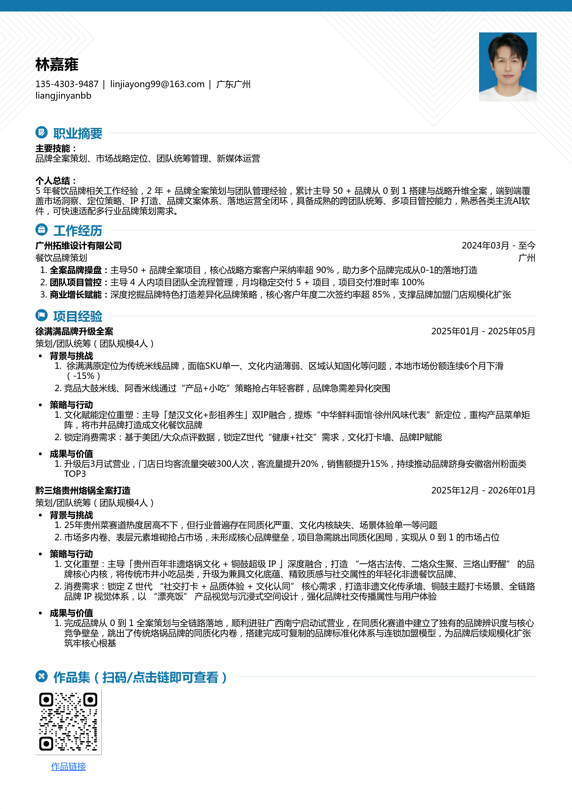

专注餐饮品牌全案策划与统筹设计团队从0到1搭建体系，端到端覆盖策略到落地全闭环。
点击探索从策略定位到视觉落地的完整流程
5年餐饮品牌相关工作经验，2年+品牌全案策划与团队管理经验，累计主导多个品牌从0到1搭建与战略升维全案。
端到端覆盖市场洞察、定位策略、IP打造、品牌文案体系、落地运营全闭环，具备成熟的跨团队统筹、多项目管控能力。
熟悉各类主流AI软件，可快速适配多行业品牌策划需求，坚持用策略驱动设计，用设计落地商业价值。
探讨品牌策略与设计的更多可能
WeChat
liangjinyanbb
Phone
13543039487
Email
linjiayong99@163.com
正在加载高级排版...
Restricted Asset
